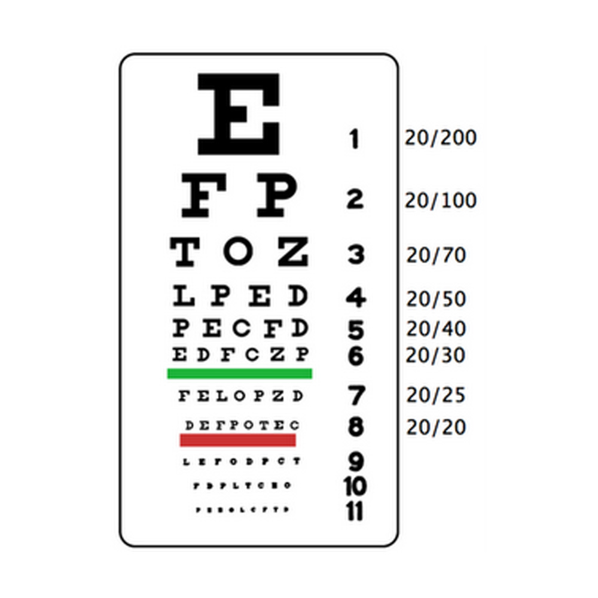
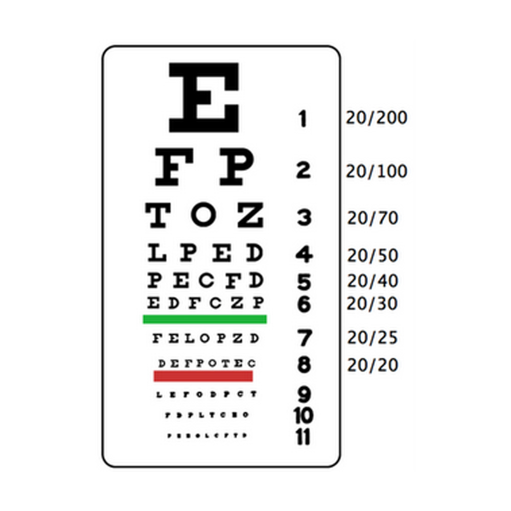
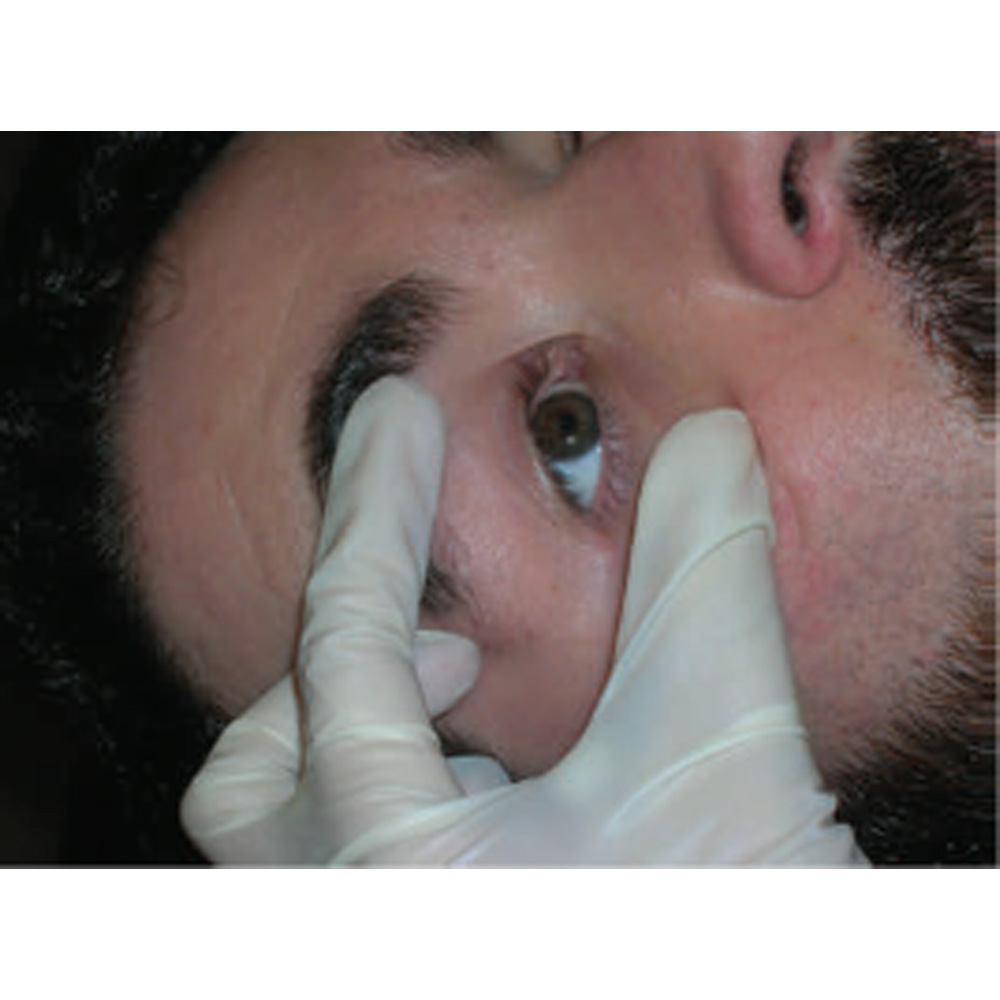
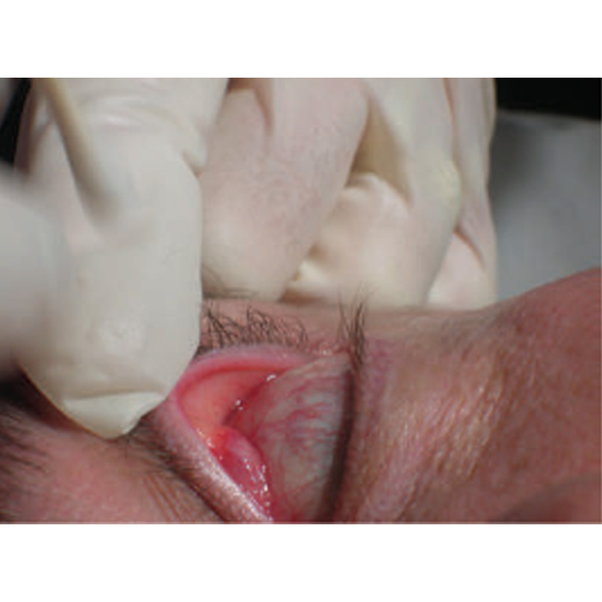
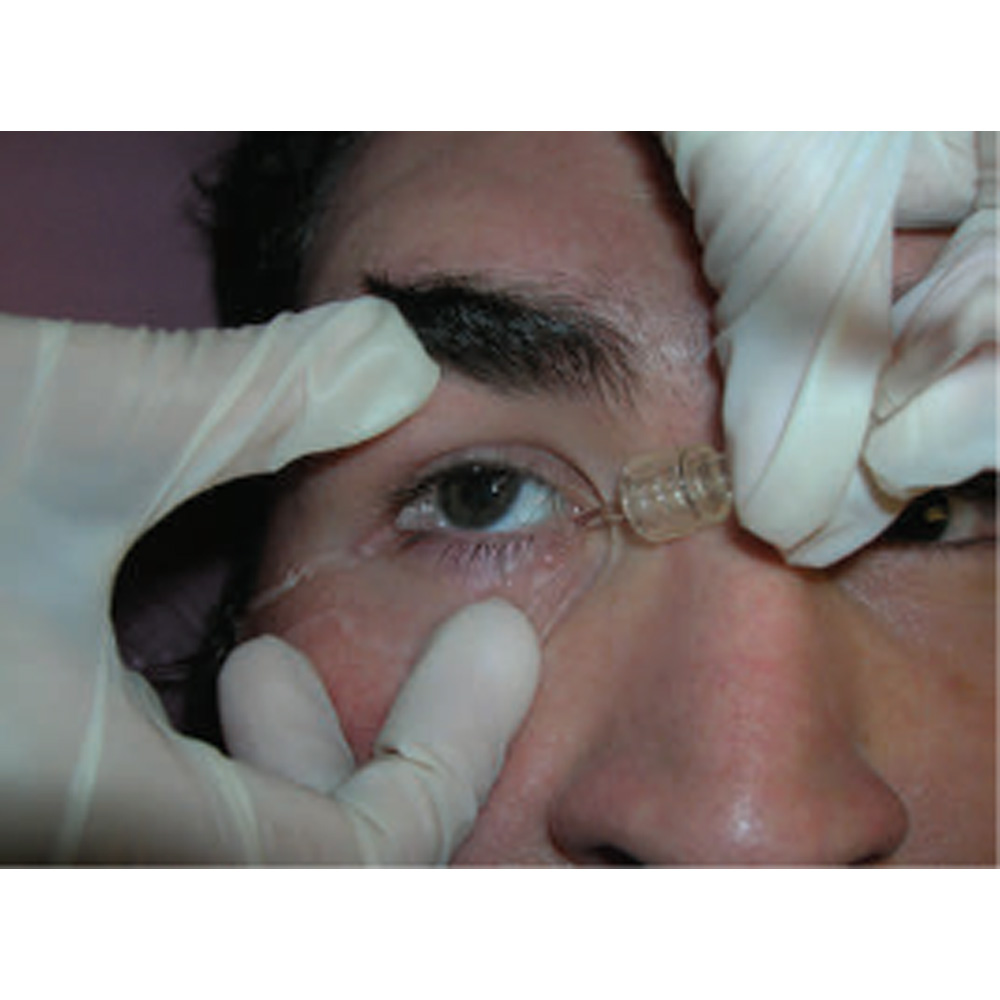
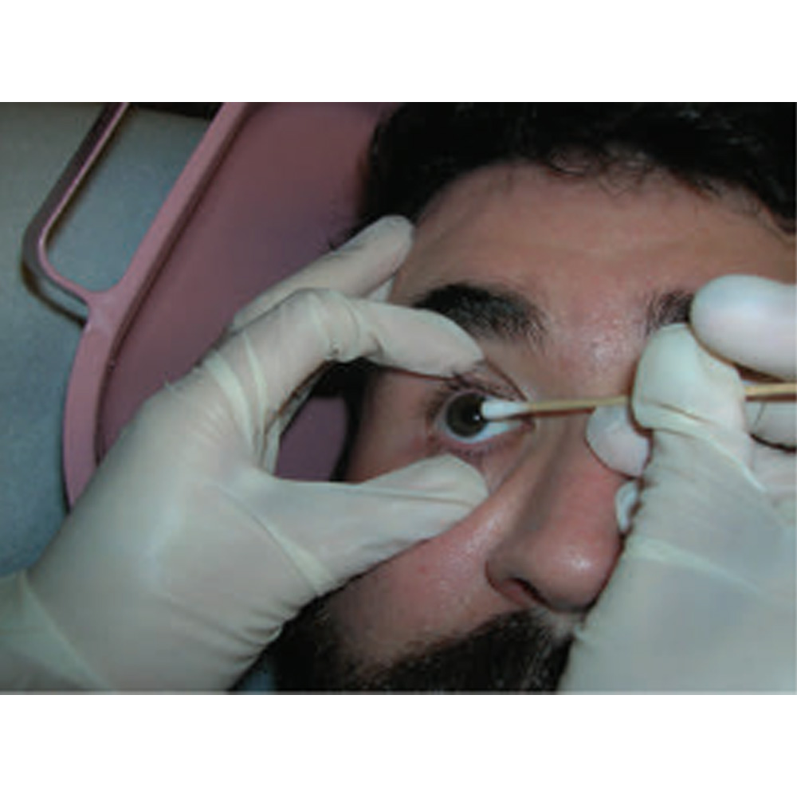
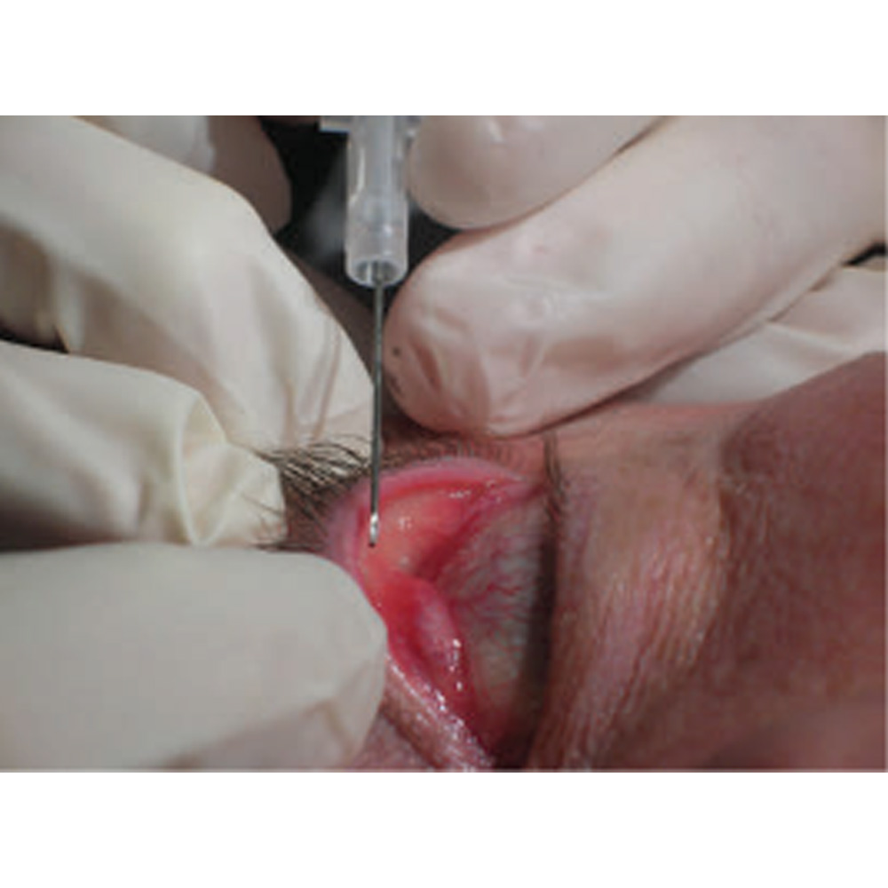

Verificar e registrar a acuidade visual do paciente (p. ex., diagrama de Snellen)
Verificar e registrar a acuidade visual do paciente (p. ex., diagrama de Snellen)
Colocar o paciente na posição supina. Separar as pálpebras do paciente com os dedos indicador e polegar da mão não dominante. Pedir que o paciente mantenha seu olhar fixo em um ponto distante e a cabeça imóvel durante todo o procedimento.
Caso haja suspeita da existência de um corpo estranho sob a pálpebra, realizar a eversão desta colocando o aplicador com pontas de algodão sobre a pálpebra e enrolando-a sobre ele.
Tentar lavar o objeto utilizando soro fisiológico esterilizado ou um irrigante oftálmico. Isso pode ser feito pela aplicação de um pequeno e contínuo volume de fluido no olho afetado.
No caso de insucesso, tentar deslocar o objeto utilizando um aplicador com pontas de algodão ou a ponta de uma gaze macia de algodão. Molhar o algodão com anestésico local e remover o objeto cuidadosamente, tocando nele levemente. Nunca empregar força ou esfregar a córnea, pois esse procedimento gera dor, danifica o epitélio e causa lesões corneanas profundas.
Se o objeto ainda estiver alojado, pode-se utilizar uma agulha estéril para removê-lo. Estabilizar a mão operante sobre a sobrancelha ou o arco zigomático do paciente. Retirar o objeto orientando o bisel da agulha em uma direção superior e tangencial.
